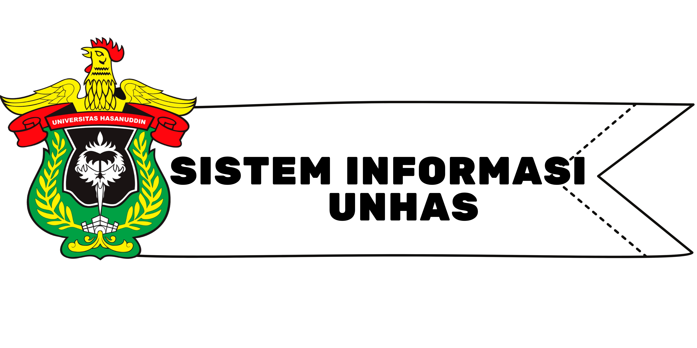

 back
Program studi Sistem Informasi UNHAS didirikan atas saran dan pendapat dari Direktorat Pendidikan Tinggi dan Asosiasi Pendidikan Tinggi Informatika dan Komputer bahwa nomeklatur Ilmu Komputer sama dengan Teknik Informatika/Informatika sehingga Universitas Hasanuddin diminta menata program studi karena di Universitas Hasanuddin terdapat Program Studi Teknik Informatika dan Ilmu Komputer. Oleh karena itu, Universitas Hasanuddin mengambil kebijakan bahwa Ilmu Komputer yang berubah nama menjadi Program Studi Sistem Informasi dengan pertimbangan bahwa Teknik Informatika lebih dulu eksis di Universitas Hasanuddin dengan jumlah mahasiswa yang besar. Perubahan nama tersebut telah mendapatkan persetujuan oleh Rektor dengan diterbitkannya Surat Keputusan Rektor Universitas Hasanuddin Nomor 452/UN4.1/KEP/2021 setelah mendapat rekomendasi dari Senat Fakultas MIPA dan Komisi I Senat Akademik Universitas Hasanuddin. Dengan adanya perubahan nama program studi tersebut, maka perlu penyesuaian KPT 2018 dengan mensubstitusi beberapa matakuliah Ilmu Komputer dengan matakuliah inti dari Sistem Informasi sesuai dengan Panduan Pengembangan Kurikulum Berdasarkan OBE Bidang Informatika dan Komputer.